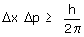
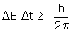

|
Indeterminación Heisemberg encontró parejas de magnitudes donde el producto de sus imprecisiones, al medirse a la vez, no puede ser inferior a h/2π  Cuanto menor sea la imprecisión en la posición mayor será la imprecisión en el momento (No se pueden conocer ambos exac-tamente a la vez)  Cuanto menor sea la imprecisión en el tiempo mayor será la im-precisión en la energía. Dicho de otra forma: en intervalos pe-queños de tiempo la energía deja de conservarse |